🇰🇷🧳🌸⚾🍖
우리의 韓國五日遊
2026.07.08（三）─ 07.12（日）｜台北 ✈ 清州 ─ 大田 ─ 首爾
✈️ 台北→清州🚂 大田 2晚🏯 北村韓屋 1晚🛍️ 明洞 1晚🚌 清州→✈️台北

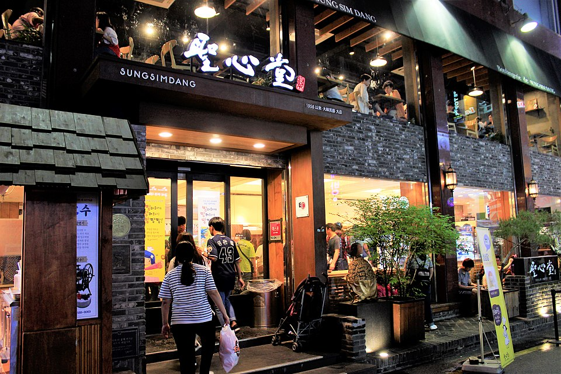
DAY 1
7/8（三）
7/8（三）
紅眼出發！大田初上陸 ＆ 韓華鷹之夜 ⚾
📍 清州機場 → 大田（宿：Bake Stay 銀行洞）
👟 預估步數：約 13,000 / 20,000 步（紅眼航班日，行程放輕鬆）
- 02:40✈️ 台北桃園 TPE 起飛（紅眼班機，前一晚 00:00 前抵達機場）
- 06:05🛬 抵達 清州機場 CJJ入境後先買 T-money 交通卡＋領網卡，機場便利商店簡單吃點東西
- 08:30🚂 無窮花號｜清州空港站 → 大田站 09:26🚆 火車（已訂）
- 09:45🧳 行李寄放民宿 Bake Stay 스테이 베이크（銀行洞）或大田站置物櫃🚶 大田站→銀行洞 約15分
- 10:30🥐 早午餐：聖心堂 성심당 本店（大田人的驕傲！）⭐早餐推薦必吃現炸「炸菠蘿麵包 튀김소보로」＋小麥麵包，順便外帶明天早餐｜08:00–22:00
- 12:00🌈 銀杏洞 Sky Road 巨型 LED 天幕商店街（「大田的明洞」，就在民宿附近）
- 13:30🧺 大田中央市場 散步＋市場小吃（大田站旁，中部圈最大傳統市場）
- 15:00🏠 Check-in Bake Stay 스테이 베이크 → 補眠午睡 💤（紅眼航班必須的！）
- 17:30🚌 出發前往球場🚌 公車約15分／🚶 步行約25分（府沙洞）
- 18:30⚾ KBO 職棒：韓華鷹 vs NC恐龍｜大田韓華生命棒球場（2025 全新球場！）已買票必體驗：炸雞＋啤酒＋跟著加油團跳應援舞 🍗🍺
- 21:30🌙 宵夜：太平小國飯 태평소국밥（24小時牛肉湯飯，大田在地名店，計程車前往）⭐宵夜推薦偷懶方案：回銀行洞路上買炸雞回民宿配啤酒 🍗
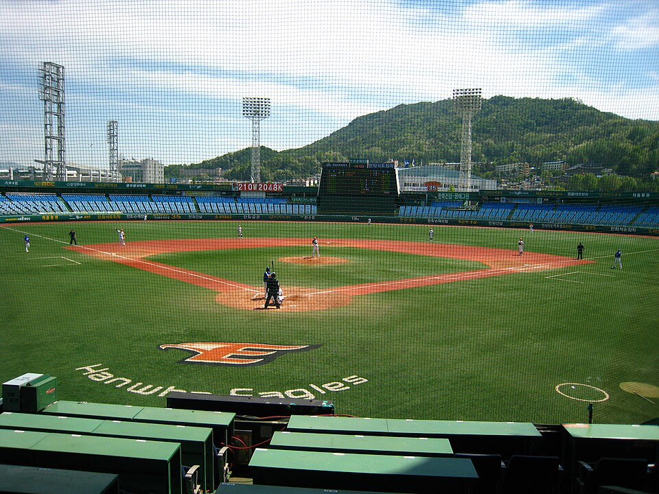
DAY 2
7/9（四）
7/9（四）
大田慢旅行：樹木園、咖啡街與刀削麵 🌳☕
📍 大田（宿：Bake Stay 銀行洞）
👟 預估步數：約 16,500 / 20,000 步
- 09:00🍞 早餐：昨天聖心堂外帶的麵包＋民宿咖啡（Bake Stay 스테이 베이크 就是烘焙主題民宿🥯）
- 10:00🌳 韓밭樹木園 한밭수목원＋世博紀念廣場、한빛塔🚌 公車606/706 約20分韓國最大市區人工樹木園，平坦好走、樹蔭多，夏天也舒服
- 12:30🍜 午餐：大選刀削麵 대선칼국수（大田是「刀削麵之都」！便宜大碗的靈魂美食）
- 14:00☕ 蘇堤洞咖啡街 소제동（大田站東側）🚌 公車回大田站百年鐵道員工宿舍改建的文青咖啡巷弄，超好拍 📸
- 16:30🎡 （體力還夠的話）大東天空公園：彩繪村＋小風車看夕陽要爬一小段坡，累了就跳過直接回民宿休息～
- 18:30🍲 晚餐：光川食堂 광천식당｜辣炒豆腐두부두루치기＋칼국수麵（大田必吃 Local 味）
- 20:00🌈 Sky Road 天幕燈光秀（每晚整點播放）＋銀杏洞逛街
- 20:30📸 拍韓式大頭貼！인생네컷 銀杏店 或 Photoism 大田店⭐大頭貼都在銀杏洞商圈裡，門口有 24 小時機台；記得挑可愛的框＋道具髮箍 🎀
- 21:00🌙 宵夜：聖心堂 關門前掃貨（–22:00，順便買明早火車上的麵包）＋路邊魚糕串 🍢
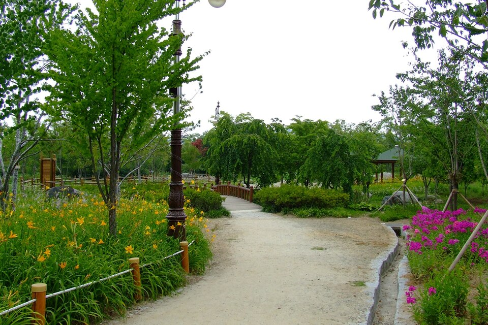
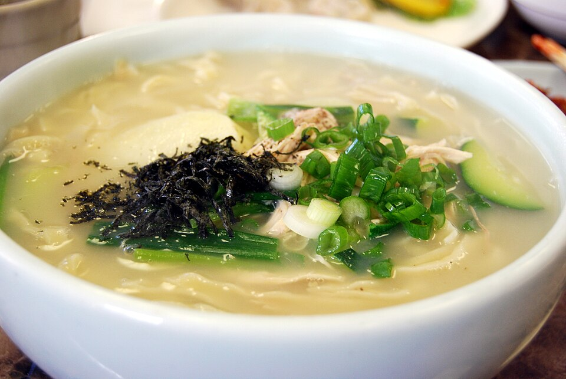
DAY 3
7/10（五）
7/10（五）
KTX 進首爾！住進北村韓屋 ＆ 布帳馬車初體驗 🏯🍢
📍 大田 → 首爾（宿：Hanok Stay 嘉會洞韓屋）
👟 預估步數：約 15,500 / 20,000 步
- 09:30🥐 早餐：聖心堂麵包＋咖啡，收行李｜11:00 Check-out
- 12:09🚄 KTX｜大田 → 首爾站 13:11🚄 火車（已訂）
- 13:30🚇 首爾站 → 安國站🚇 4號線→忠武路轉3號線，約20分
- 14:00🍱 安國站附近簡單午餐（土俗村蔘雞湯 也可以，夏天吃蔘雞湯「以熱治熱」！）
- 15:00🏠 Check-in Hanok Stay 嘉會洞韓屋民宿——我們就住在北村韓屋村裡面！🎉
- 15:30🏯 北村韓屋村 八景散步⭐韓屋村嘉會洞31番地一帶是經典明信片視角；傍晚旅行團散去後最好拍。記得輕聲細語（是住宅區唷）🤫
- 17:00🎀 三清洞街：雜貨小店＋韓屋咖啡下午茶
- 18:30🍽️ 晚餐：黑白大廚餐廳「度量 도량」（景福宮站，從民宿散步15分）📱 CatchTable 提前預約黑湯匙主廚임태훈的中華料理，訂位難度中等、離住處最近的黑白大廚店！
- 20:30🏮 宵夜：鐘路3街 布帳馬車一條街⭐布帳馬車推薦🚇 安國→鐘路3街 1站或🚶15分3～6號出口之間，晚上6點後開攤：雞蛋捲、烤腸、辣炒年糕配燒酒，體驗韓劇同款路邊攤！
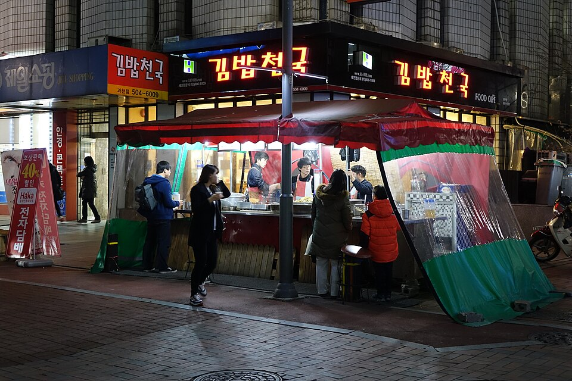
DAY 4
7/11（六）
7/11（六）
明洞全制霸：購物、龍鬚糖小哥、烤五花、南山夜景 🛍️🍖🌃
📍 首爾（宿：HOTEL BLISS 明洞）
👟 預估步數：約 18,500 / 20,000 步（今天最操，好好吃肉補回來！）
- 08:00📸 清晨北村散步——沒有人潮的韓屋巷弄只有這時候有！
- 09:00☕ 早餐：Onion 어니언 安國店（韓屋改建的人氣麵包咖啡廳）⭐早餐推薦招牌「Pandoro 雪山麵包」＋美式，坐在韓屋簷廊下吃早餐超chill｜週末 09:00 開門
- 10:30🧳 回民宿 Check-out → 搭地鐵到明洞、行李寄放 HOTEL BLISS🚇 安國→忠武路轉4號線→明洞，約20分
- 12:00🍗 午餐：孝談刀切麵一隻雞（明洞總店，地下室隱藏名店）或 神仙雪濃湯
- 13:30🛍️ 明洞購物時間！⭐逛街推薦首推 Olive Young 明洞旗艦店（K-beauty 一站買齊、可即時退稅）→ ALAND（潮牌選物）→ 明洞地下街（小物便宜）→ 樂天百貨免稅店
- 15:00🏨 Check-in HOTEL BLISS，戰利品放房間休息一下
- 17:00🍬 找龍鬚糖小哥 Yoon Nala！＠Noon Square 前⭐指定任務擺攤 17:00–23:00（19:00–20:00 小哥去吃飯會不在）；會講中文超嗨的「台灣女婿」，IG @yoonnala879 🍯
- 18:00🥓 晚餐：王妃家 왕비집 明洞本店 烤五花肉＋韓牛⭐烤肉推薦專人桌邊代烤、負責吃就好！郭富城也來朝聖過的明洞烤肉名店
- 19:45🚡 南山纜車 → N首爾塔 看夜景・掛愛情鎖 💕🚶 明洞站3號出口→纜車站約10分
- 21:30📸 下山後拍韓式大頭貼：인생네컷 明洞 或 Photoism 明洞（Hotel Skypark Central 1F 等多台）⭐大頭貼把今天的戰利品和夜景好心情拍進四格裡！
- 22:00🌙 宵夜：明洞夜市小吃攤（雞蛋糕、龍蝦起司串）／還吃得下就去 黃金牧場（烤肉開到凌晨3點）或 元堂脊骨土豆湯（24小時）⭐宵夜推薦
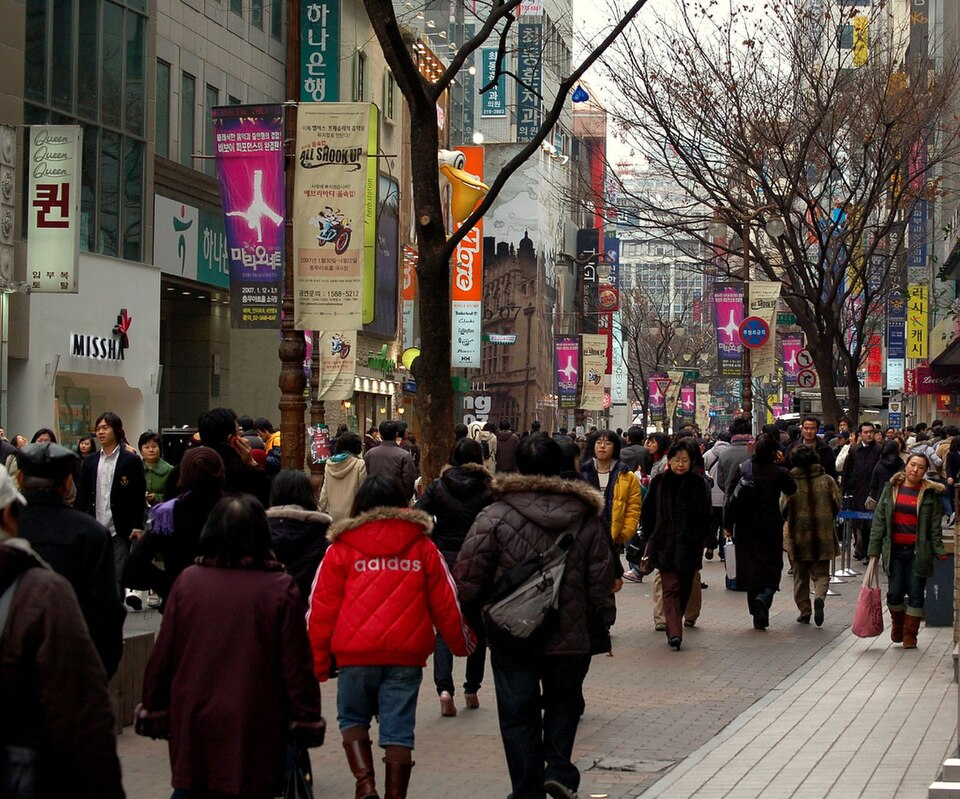
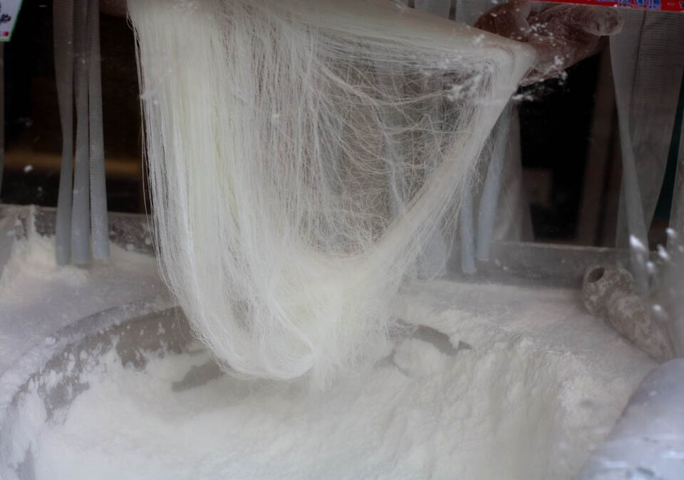
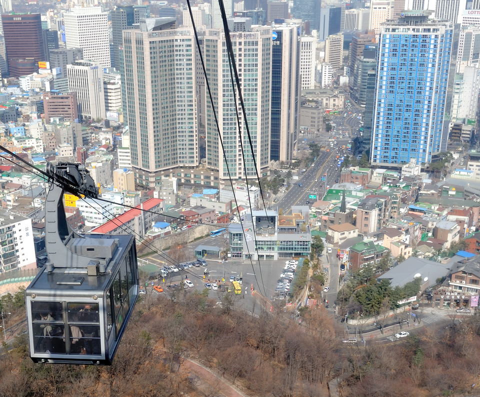
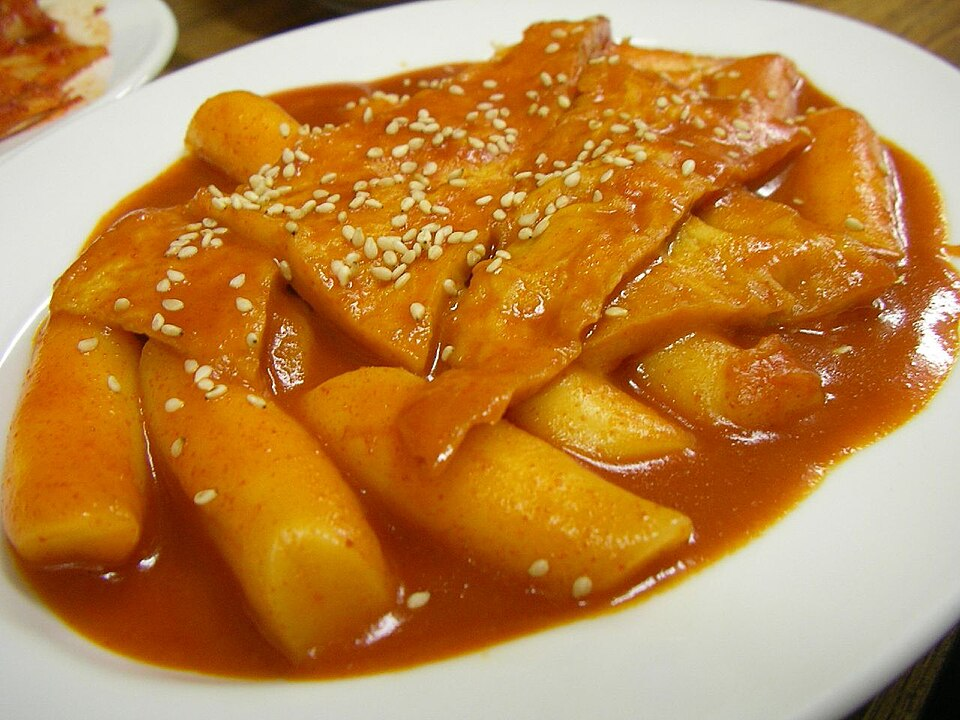
DAY 5
7/12（日）
7/12（日）
景福宮、廣藏市場最後衝刺 → 回家 ✈️
📍 首爾 → 清州機場 → 台北
👟 預估步數：約 18,000 / 20,000 步（回程巴士＋飛機上好好休息）
- 08:00🍲 早餐：神仙雪濃湯 明洞店（08:00 開門，熱呼呼牛骨湯開啟最後一天）⭐早餐推薦清淡派可改「味加本 본죽」鮑魚粥（09:00 開）
- 09:00🧳 Check-out、行李寄放飯店櫃檯
- 09:30🏯 景福宮＋光化門廣場🚌 公車或🚇 3號線景福宮站10:00 守門將交接儀式必看！穿韓服入宮免門票（宮外有很多租借店）👘
- 12:00🎨 仁寺洞 쌈지길：迴旋斜坡文創小店＋午餐（韓定食小巷）
- 14:00💧 清溪川 散步 10 分鐘納涼
- 14:30🥞 廣藏市場：綠豆煎餅빈대떡＋麻藥飯捲＋生拌牛肉（當提早的晚餐吃飽飽）⭐必吃
- 16:00🧳 回明洞拿行李🚇 鐘路5街→明洞 約15分
- 16:40🚇 明洞 → 高速巴士客運站🚇 4號線→忠武路轉3號線，約30分
- 18:10🚌 高速巴士｜首爾高速巴士客運站 → 清州機場 20:30🚌（已訂）17:30 前抵達客運站；地下街 GOTO Mall 還能做最後採買 😆
- 23:40✈️ 清州 CJJ 起飛 → 台北 TPE 01:10（+1）｜韓國，我們下次見 👋🇰🇷
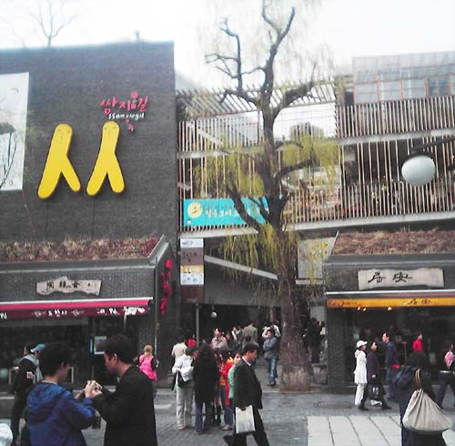
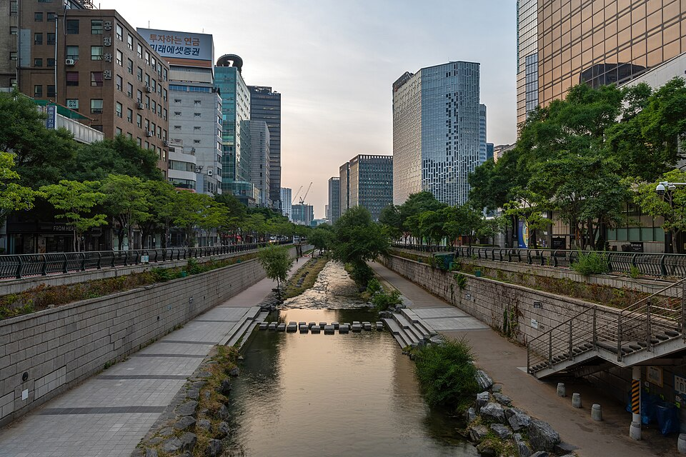

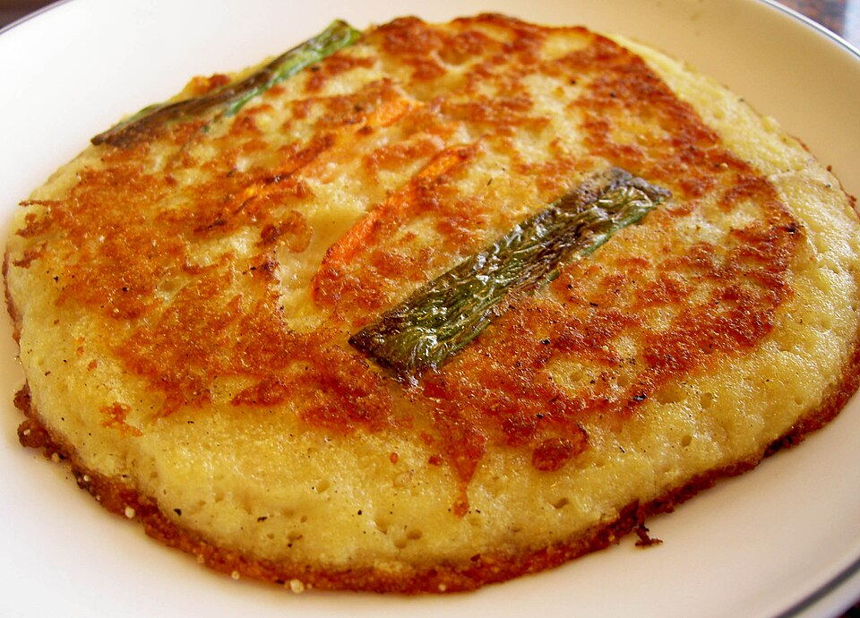
💖 指定任務＆推薦店家總整理 你點名的都排進去了！手機點店名直接導航 🧭
🏯 韓屋村 → 北村韓屋村（7/10下午＋7/11清晨）
你們的韓屋民宿就在嘉會洞＝北村正中心！傍晚＆清晨去八景拍照最美最沒人。加碼：三清洞（隔壁）、仁寺洞쌈지길（7/12）。 備案：時間多的話「益善洞韓屋村」也超好拍，鐘路3街站直達，可以跟布帳馬車排同一晚。
你們的韓屋民宿就在嘉會洞＝北村正中心！傍晚＆清晨去八景拍照最美最沒人。加碼：三清洞（隔壁）、仁寺洞쌈지길（7/12）。 備案：時間多的話「益善洞韓屋村」也超好拍，鐘路3街站直達，可以跟布帳馬車排同一晚。
🥓 烤五花肉 → 王妃家 왕비집 明洞本店（7/11晚餐）
明洞最具代表性的烤肉店，專人桌邊代烤，五花肉＋韓牛都讚，離飯店走路 5 分鐘。 替代：預算控制選「荒謬的生肉 明洞店」烤五花吃到飽（約台幣400，CP王）；想吃特色選「八色五花肉」8種口味（新村總店）。
明洞最具代表性的烤肉店，專人桌邊代烤，五花肉＋韓牛都讚，離飯店走路 5 分鐘。 替代：預算控制選「荒謬的生肉 明洞店」烤五花吃到飽（約台幣400，CP王）；想吃特色選「八色五花肉」8種口味（新村總店）。
👨🍳 黑白大廚餐廳 → 度量 도량（7/10晚餐，景福宮站）
黑湯匙主廚임태훈的中華料理，是離你們韓屋民宿最近、訂位難度也友善的黑白大廚餐廳（步行15分）。用 CatchTable Global App 預約：Email 註冊即可、海外信用卡付訂金（預約教學）。 替代：鄭智善「甜蜜蜜 티엔미미」港點（弘大／江南）、윤남노「Deepin 디핀」（新堂／玉水）；敢挑戰秒殺級就搶拿坡里黑手黨「Via Toledo Pasta Bar」（南營站，每月開放訂位秒空）。
黑湯匙主廚임태훈的中華料理，是離你們韓屋民宿最近、訂位難度也友善的黑白大廚餐廳（步行15分）。用 CatchTable Global App 預約：Email 註冊即可、海外信用卡付訂金（預約教學）。 替代：鄭智善「甜蜜蜜 티엔미미」港點（弘大／江南）、윤남노「Deepin 디핀」（新堂／玉水）；敢挑戰秒殺級就搶拿坡里黑手黨「Via Toledo Pasta Bar」（南營站，每月開放訂位秒空）。
🏮 布帳馬車 → 鐘路3街 布帳馬車一條街（7/10宵夜）
鐘路3街站 3～6 號出口之間，晚上6點後整條開攤，阿珠媽拿手菜：雞蛋捲、辣炒魷魚、烤腸＋燒酒，離韓屋民宿一站地鐵，喝完散步回家剛剛好。
鐘路3街站 3～6 號出口之間，晚上6點後整條開攤，阿珠媽拿手菜：雞蛋捲、辣炒魷魚、烤腸＋燒酒，離韓屋民宿一站地鐵，喝完散步回家剛剛好。
🛍️ 明洞逛街 → Olive Young 明洞旗艦店（7/11下午）
全韓最大旗艦店，K-beauty 面膜、彩妝、保健品一站買齊，滿 15,000₩ 現場退稅。動線：Olive Young → ALAND → 明洞地下街 → 樂天免稅店。
全韓最大旗艦店，K-beauty 面膜、彩妝、保健品一站買齊，滿 15,000₩ 現場退稅。動線：Olive Young → ALAND → 明洞地下街 → 樂天免稅店。
📸 韓式大頭貼（인생네컷／네컷사진）（7/9 大田晚上＋7/11 明洞晚上）
大田：인생네컷 銀杏店（銀杏洞 168-5，10:00–23:00，門口有 24 小時機台）、Photoism 大田店（銀杏洞商圈內）——就在你們民宿樓下商圈！
首爾：Photoism 明洞（Hotel Skypark Central 明洞 1F 等）、인생네컷 明洞，逛街動線上隨處可拍。 小技巧：機台只收現金或韓國支付，準備千元鈔；拍完掃 QR code 可下載電子檔 📲
大田：인생네컷 銀杏店（銀杏洞 168-5，10:00–23:00，門口有 24 小時機台）、Photoism 大田店（銀杏洞商圈內）——就在你們民宿樓下商圈！
首爾：Photoism 明洞（Hotel Skypark Central 明洞 1F 等）、인생네컷 明洞，逛街動線上隨處可拍。 小技巧：機台只收現金或韓國支付，準備千元鈔；拍完掃 QR code 可下載電子檔 📲
🍬 龍鬚糖小哥 Yoon Nala → Noon Square 前（7/11 17:00 後）
明洞 Noon Square 門口，擺攤 17:00–23:00（19–20點小哥吃飯休息）。會說中文的搞笑「台灣女婿」，記得買一盒再合照！IG：@yoonnala879 🍯
明洞 Noon Square 門口，擺攤 17:00–23:00（19–20點小哥吃飯休息）。會說中文的搞笑「台灣女婿」，記得買一盒再合照！IG：@yoonnala879 🍯
🍳 早餐口袋名單
- 聖心堂本店（大田）炸菠蘿麵包 08:00–22:00
- Onion 安國店（首爾）韓屋咖啡廳，平日07:00／週末09:00
- 神仙雪濃湯 明洞店 08:00 開，湯飯暖胃
- 味加本 본죽 明洞店 鮑魚粥、蔘雞粥 09:00 開
- Isaac Toast 明洞到處都有的國民鐵板吐司
🌙 宵夜口袋名單
- 太平小國飯（大田）24小時牛肉湯飯
- 聖心堂（大田）營業到 22:00，麵包當宵夜
- 鐘路3街布帳馬車（首爾）18:00～深夜
- 黃金牧場（明洞）烤肉營業到凌晨 3:00
- 元堂脊骨土豆湯 明洞2號店 24小時馬鈴薯排骨湯
🚇 交通小抄
📌 行前必辦清單
- ⚠️ 手機先安裝 Naver Map App（點行程地點直接導航）＋ CatchTable Global（教學），「度量」訂位開放就搶 7/10 晚
- 7月首爾是梅雨季尾＋悶熱 33°C：摺疊傘、小電扇必帶 ☔
- 王妃家、一隻雞人多，用餐避開整點尖峰
- 錢包準備：市場、布帳馬車多半只收現金 💵
- Olive Young 記得帶護照退稅
🧳 韓國行・前置準備清單 勾選自動儲存；開啟雲端同步後，手機和電腦互通！
☁️ 雲端同步設定（Google 雲端硬碟）未啟用
按下複製後用 LINE 傳到手機，點開連結就自動啟用同步
- 開 sheets.new 建一個新 Google 試算表（會存在你的雲端硬碟）
- 試算表選單「擴充功能」→「Apps Script」
- 貼上 google-sync-apps-script.gs 檔案裡的程式碼（跟網頁放在同資料夾），儲存
- 「部署」→「新增部署作業」→ 類型選「網頁應用程式」→ 執行身分「我」、存取權「任何人」→ 部署並複製 URL
- 把 URL 貼到上面欄位按「啟用同步」；手機和電腦都貼同一個 URL 即完成同步 🎉
📦 已完成 0 / 0✅ 已自動儲存